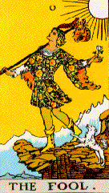

 “Traditionally the Fool represents the somehow mysteriously structured chaos which seems to lie at the root of existence. In most decks he is generally left unnumbered, or counted a zero. He is the cosmic cipher, the unmarshalable, archetypal square peg, the existential everyman, nonpartisan, nonaligned and ‘wild,’ as the poker term has it, all over the place, at home everywhere and nowhere. The divine bum.”
Slothrop is an automated equational theorem prover that performs a variant of Knuth-Bendix completion. Instead of requiring an a priori term ordering to ensure convergence of rewriting, the space of orderings is searched. A termination checker is used to restrict search to the well-orderings. Input is given in TPTP format. A detailed description is available. Source code (in Ocaml) and a Mac OS binary are available. Based on an implementation of completion by Franz Baader and Tobias Nipkow, © 1998 Cambridge University Press, and on supporting data structures © 2003 Jean-Christophe Filliatre. Contact me for more information.
Last modified: Mon Sep 4 19:28:37 CDT 2006